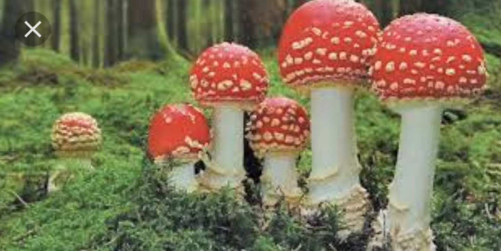
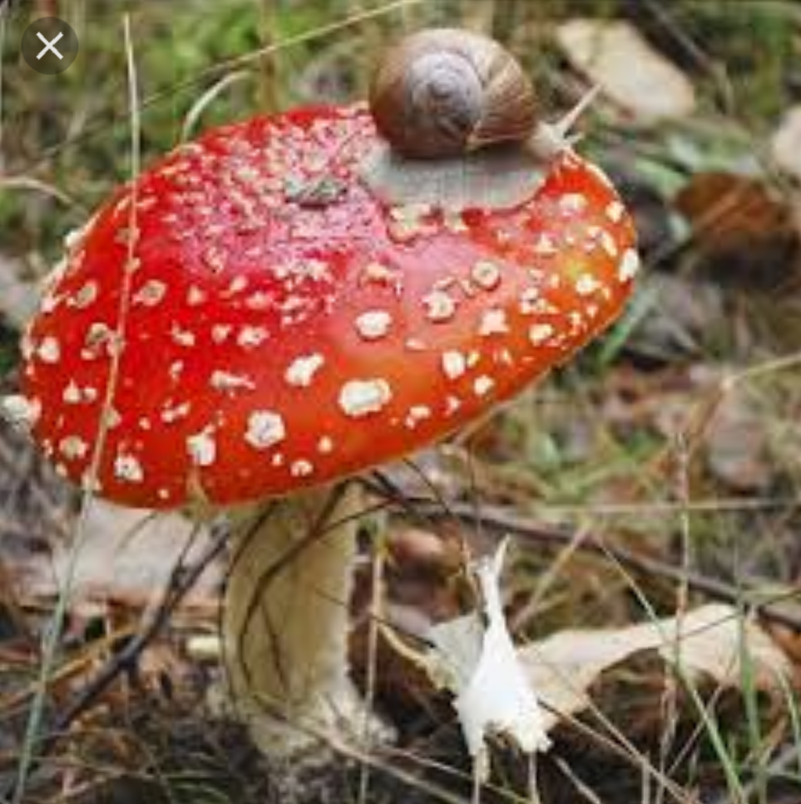

Effects of some mushrooms

Fungi ctreate harm by spoiling our food,distryed tibers, and by causing diseases of crops, livestock, and humans.Fungi,mainly mould like Penicillium and Aspergilus, spoil many stored foods.Fungi cause majority of plants diseases, which in turn cause serious economic losses.
Halllucinogenic mushroom can give people stomach cramps or make them throw up. they also give some usera diarrhea. busuase mushroom ulter a person's sense of reality and effects judgement, tying to drive while under the influence of mushroom is likely to cause accidents.
Mushroom poisoning (also known as mycetism oe mycetismus) which is a harmful effect from ingestion of toxics substance present in the mushrooom substrate.
WHY ARE SOME MUSHROOMS NON EDIBLE? Recognition of edible mushroom from non edible mushrooom is simply an art that is being handed from generation to generation. misidentification is close resemblance in terms of color and general morphology of the toxic mushroom species with edible species.
NOTE:never consume the following mushrooms:DEATH CAP(Amanita phalloides)Death caps are among the most poisonous of all mushrooms and respossible for the most majprity of all the mmushrooms-related to deaths world-wide. they grow in many countries around the world.
Some effects of poisonous mushrooms are Hallucination-some mushrooms species contian toxin that cause hallucination, Gastrointestinal ilness- many poisonous mushrooms cause gastoinestinal ilness, such as nausae, vomiting,stomach cramps and diarrhoea.
THE PHYSICAL EFFECTS OF MUSHROOMS CAN INCLUDE:NAUSEA AND VOMITING, INCREATE HEART RATE, BLOOD PRESURE AND TEMPERATURE, MUSCLES WEAKNESS, DROWSINESS, LACK OF COORDINATION, DILATED PUIPILS.

go to page3
go to page5